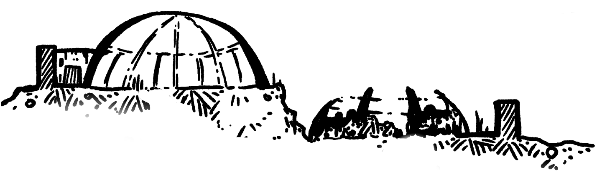
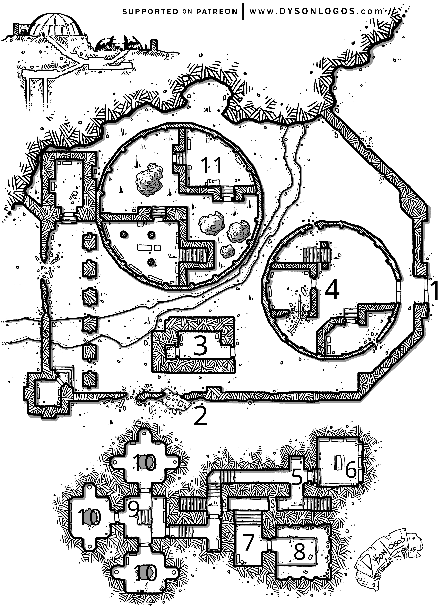
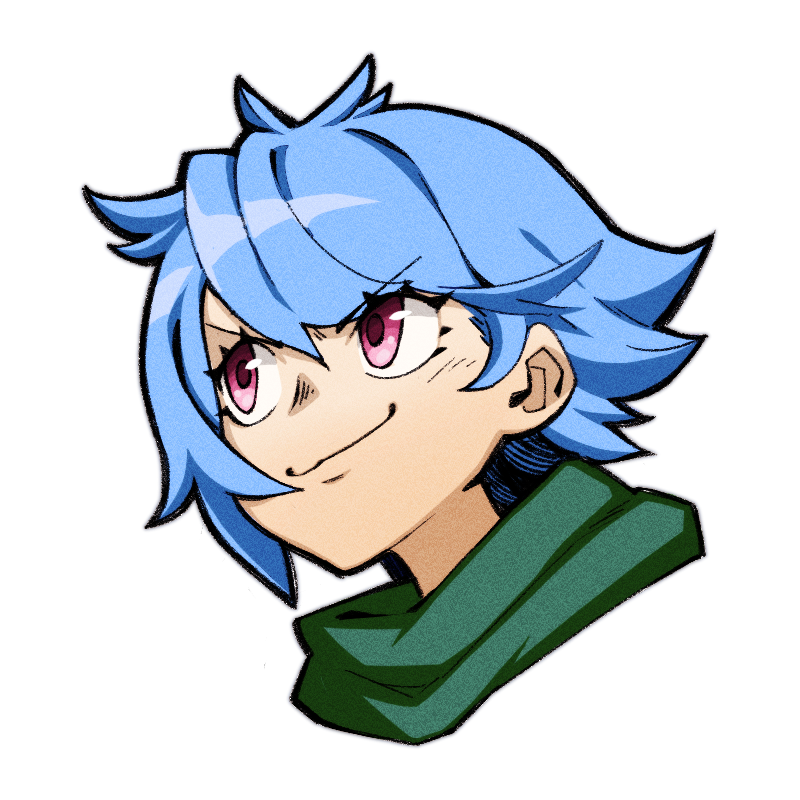

Here is my attempt/write-up for an Adventure Site I recently ran as part of my ongoing BREAK!! campaign. Given this is more a “throwaway” site of my campaign than a presentable module or anything, it is fairly rough around the edges without full completeness. It was quite inspired by the Magitech Facility BREAK!! demo adventure site - credit where it is due. Other credits include Elsewhere inspiration from the Gardens of Ynn and map usage from DysonLogos.
I hope you find some use of it!
Site’s History: What started in the early 3rd Aeon as a well-intentioned joint venture in botany between the budding empires of Gley and Calian quickly devolved into their usual hijinks of manipulating the laws of the world around them. Their founding mantra was “to understand the life around us is to understand ourselves”. While some might argue they kept to that mantra, the meaning of it changed drastically when they found the means of opening a portal to an Elsewhere of twisted gardens called Ynn. It was discovered by the Head Calian Researcher Norin Rex that root snippings from the plants of this Elsewhere could alter the flesh of mortal creatures; creatures which would survive the transformation. Thus, the seeds of Fleshwarping were sown and experiments were attempted in secret behind Gley’s oversight. It is claimed by some that the eventual fall and abandonment of this Facility came as the result of the secret literally bursting forth…in the form of a Grimwing breaching containment and razing the place to the ground.
The Site Now: Most folks living in the area have long considered the Facility just another relic of history in the local jungle, and one best left alone. Only occasionally would a Goop be seen roaming around it and even scarcer yet would one wander far enough to be a threat to anyone. Recently, however, it has seemingly kicked to life again and has begun poisoning the local riverways with a junky sludge causing folks to become Jellyfied if consumed directly. With the rivers being their primary water source, concern is rising amongst those nearby that they will have to uproot.
Hooks (why would players want/need to go there?): Besides the obvious one above, I’ll give my specific example. The characters are currently facing the incursion of a Divine Ruler originating from the Elsewhere Ynn. However, they are finding it and its subjects intangible while in the Outer World, reappearing upon defeat. They suspect this facility has some clues on Ynn and ways to solidify the Ruler into a permanent state (think Bellzuub’s Ritual from the Source Book).
Ecology/Atmosphere: A fun one to include at the suggestion of the Source Book. I’ve placed this Site deep within a normally spiritually alive jungle that’s now corrupted and dying (in part courtesy of this Facility). From afar it appears just like any other Gleysian Ruins, structurally sound yet rusty against the overgrowth.
An uneasy blanket of Dark (or Flesh)-based Mana permeates the area as you close in on it and one with astute hearing could swear they hear the ambient sounds of a soft garden waltz filtering through the ground. Multiple large pipes jut out of the cliffside’s base where an obvious sludgey pour of waste spews forth into the rivers cutting through the Site.
Wandering Encounters: Very dependent on the Rank of your Party of course but some considerations below.
- 1x Mushroom + 6x Funguys rather upset at recent sludgey developments (BREAK!! Blog)
- 3x Goops Ambush!
- 4x Carnivorous Plants awkwardly hiding amongst the flora (Horfhog Reskin)
- 6x Skelemen Archers fire off the Cliffside
Layout: Aside from just the top-down map here, I believe it is rather important to specify the verticality of the Adventure Site, i.e. having the lower, accessible dome and having the higher, closed-off dome atop the cliffside. While the upper dome is fully inaccessible by the outside, reward players that can scale the cliff with some kinda reward/friendly encounter.
I’d personally recommend showcasing the vertical slice of the map with the lower components blocked out:

Site Keys

1. Ajar Gates [Access Point]: The large front gates are unpowered and can no longer fully close itself, leaving a gap which Small Species may squeeze through. The door may be opened via manual strength but its creaking metal telegraphs your approach to the Guardian Encounter in Room 3, who will have 1 Turn to prepare.
2. Crumbled Wall [Access Point]: Along the rusting Gleysian Alloy security wall lies faded iconography of the empires. Down the stretch, two obvious sections of the wall are breached and crumbled, large enough for all to fit through. A gang of 6 Wood Lalkas sit atop the walls, eagerly waiting to push debris on the heads of those walking in (Falling Debris CLICK!! Trap).
Successful Stealthy Movement gets by them unseen. Cautious Movement points them out though some manner of stopping them is required - they are terribly bored without masters and in need of simple entertainment [Negotiation].
3. Exterior Greenhouse [Guardian Encounter/Harmful Terrain]: Outside the dome and clearly once a showpiece building for those touring the Facility, this greenhouse is now massively overgrown with flora both local, foreign, and of other times altogether. 3x Carnivorous Plants (Horfhog Reskin) lie within the foliage, waiting to Ambush. Brash movements cause poisonous bulbs to unfurl, causing all Areas inside to become Harmful unless wearing proper protection like a Rebreather.
The notable backroom (closed by a rusted metal door) is the office and resting place of an ancient Gleyian Researcher’s skeleton - fully skeletized within a punctured Anti-Hazard Outfit. On their person is a keycard with writing in Gleysian Code: “Designation: Lou Waters. Security Clearance: Tier 1.”, usable for terminals within the Facility.
4. Fallen Welcome Center: Once a cheery welcome center for the botanical advancements of the Empires, this metallic dome structure is in tatters and barely standing. Its alloy support beams are all that’s left of the dome and even those are bent outwards as if having exploded from within. Deep scorch lines scar everywhere within, floors to walls. Busted Gley terminals and scraps of visitor information pamphlets are all that remains. Blast doors covering a staircase down attempt to close repeatedly but are jammed by recently-applied Ennui Sludge (Source, pg. 292).
5. Entrance Hall [Trap]: A plain, functional entrance hallway. Across the staircase has some simple shelves (Insight Check to notice it hiding Room 7’s door) while the corner has a cracked, though functional, Gleysian terminal in an outcrop and the closed door to Room 6. The Gleysian Terminal requires a Tier 1 Keycard but is vulnerable to hacking. One failed attempt is safe, further failed attempts invokes a Dark Apparition CLICK!! Trap by means of an angry semi-sentient AI trapped in the Terminal.
Without proper authentication, a Poison CLICK!! Trap is present halfway down the stretch - activating it releases noxious spores to flood the entire hallway. Proper protection bypasses the Check.
The entrance to Room 7 may be opened via this Terminal by means of hacking
6. Break Room [Loot]: A locker/work prep station, additionally appointed as a break and nap room. A variety of crew items are left undisturbed within - notes, photos, trinkets - as if abandoned in a hurry. Inside can be found: 3x Gley Rebreathers, 6x Anti-Hazard Outfits with the Facility’s half-Calian/half-Gley logo, a “Local” Map of a far different time [20C], and 6x still-edible MREs [Ration].
Inspecting the room reveals a hidden to-do note by the Head Researcher Norin Rex complaining about troubles finding: “a new discrete location for the ever-expanding substance within the Dissolution Chamber.”
7. Detoxification Antechamber [Secret Room]: Unlike the rest of the Facility exposed to the elements, this sector is perfectly clean and preserved. Norin’s desk within contains research notes on attempting to “implant the stabilized Anchor Roots into living specimens as a means of making the living form ‘more malleable’. Simple warning signs in Dark Tongue point out the need for Anti-Hazard Protection in the next chamber.
-
Means of Accessing:
- The Terminal in Room 5 may be hacked to open the sealed doors.
- A Bomb might blow the sealed doors open.
- A Tier 2 keycard might be found in Room 11.
-
Site Secret: The Calian Empire, early on in the 3rd Aeon, learned a lot on the art of Fleshwarping from Ynn itself. Early attempts to use material from Ynn failed, however, as the unstable roots would dissolve the host bodies. Norin decided that this semi-sentient substance may be of use later so all dissolved material was thrown into Room 8.
8. Dissolution Chamber [Secret Room] [Guardian Encounter]: Entering this chamber requires going through a detox airlock that douses the room in solvent as a means of killing any errant goop exiting the chamber. Direct skin contact results in a Burning Injury. Any not under Anti-Hazard Protection when entering the chamber must make a Grit Check or become Jellyfied from exposure to the substance within.
This is a smooth-walled metal chamber where, from the door, a grated platform juts out over a massive bubbling pool of Mana Waste. This pool itself is a Supergoop fused from the dissolved material of many, many test subjects. Seemingly still composed of some sentience, it will pathetically try and raise pods onto the platform towards living creatures. It makes soft noises eerily reminiscent of human pain and longing.
While no actual Combat or Encounter is intended here, feel free to up the stakes with the platform being corroded enough to be faulty and collapse, or let the Supergoop reach the platform and attack directly.
9. Shared Laboratory [Loot]: The shared research and experimentation space of the Empires here within the Facility. Numerous lab benches contain the dead, or otherwise overgrown, remnants of relatively beneficial studies - hardening plant strains against disease, identifying those strains under extinction threat, etc. One experiment stands out, however, given it contains a yet living flower. A single beautiful opalescent flower gives off a dull glow, suspended in a viscous hydroponic solution. 1 Unit of Aken’s Succor (Source, pg. 291).
Note excerpts read:
“We’ve made significant effort here to re-root the Anchor Tree better by expanding its total bore holes to 3 individual ones and infusing the roots with Bright Water to temper its Mana Alignment. These results in substantial progress with corporeally stabilizing the Rift but as yet we are limited to harvesting material on this plane. Insofar attempts at traversing into the portal have resulted in inconsistent results - early attempts were entirely fatal while more recent ones could endure the shift but reported the inability to interact with anything, i.e. “a feeling of incorporeality”. At this point, the only thing to do is wait on Gley accomplices to deliver the other half of the stabilization instrument.”
10. Anchor Root Chambers [Loot]: Three identical chambers sit behind heavy doors with circular viewing windows. Inside each is a singular large glass tube going ceiling-to-floor where massive tree roots sprawl down out of sight. These tubes are filled entirely by Mana Waste yet the roots live. On each is an access hatch that can be opened to reach the roots (normally submerged in Bright Water) though drain button mechanisms no longer work as intended.
Opening the hatch begins flooding the room in Mana Waste, which becomes Harmful Terrain to non-Jellyfied creatures. Unprotected exposure requires a Grit Check or become Jellyfied. Root clippings may be harvested to obtain 2 Units of Warp Root (Source, pg. 289).
11. The Anchor Tree [Guardian Encounter]: The inside of the upper dome has been entirely overtaken by the twisted vines and flora of Ynn itself. In the center courtyard of the dome lies a massive, knotted tree encompassing the roof of the dome entirely. Its center is rent asunder, where a flickering portal to the Elsewhere hums. From the portal to the dome crawls three twisting root clusters, burrowing into the ground below. Each has a sickly ooze pulsing through its veins. Beyond the portal is a gothic cathedral flush with beautiful sunlight and horticulture.
A porcelain half-mask connects to the portal via tethers of Mana, resting on the face of an eerily humanoid-like vine sculpture - kneeling with arms outstretched wearing a pained expression.
- Secret: Hidden in the brambles of the vine sculpture is a Tier 2 Access Keycard belonging to Norin Rex herself.
Seated at a lovely picnic spread just in front of the portal is a lavender-haired Chib named Skippi, boredly twirling a flower in her hands. Non-threatening if she is alerted to the party, she simply invites them to join claiming “she’s naught to do but relax while stuck on babysitting duty”.
- Party Fights: She’ll simply sigh with a “tsk tsk read the room” and engage. She is a Betrayal Demon and calls for 4x Rose Lalkas, who have been waltzing in the courtyard nearby, to come help.
- Party Picnics: She’ll have a quite candid conversation with the Party, offering information on the Facility and the Elsewhere Ynn as belonging to a Divine Ruler trying to cross into the Outer World. She’s a manufactured servitor of the Ruler who has to follow-out orders but is a bit “over it with all the bossiness”. The picnic food is, of course, poisoned. 5 minutes after consuming, make a Grit Check or become Putrefied. The Party may try to Socialize with Skippi over any topic. On Success, she will point out the poison and give Antidotes with a chuckling “oopsies”.
- Recommended Map: I used this amazingly fitting Czepeku map “Painted Portal” for atmosphere/Combat.

Closing the portal requires untethering the half-mask. Direct contact with the mask triggers a hex that lets off a harmful pulse, requiring a roll on the Injury Table. A successful Might Check (Snag while hex is active) pries it from its position.
- If on amicable terms, the Party may try to Negotiate with Skippi to avoid fighting and just take the mask. Success makes Skippi shrug, sarcastically touting “damn what strong adventurers they were huh?”, and dropping the hex.
- Adversarially, Skippi will keep reconstituting after reaching 0 Hearts, stepping out of the Portal the following Turn. The hex is disrupted while Skippi is in the Portal - reconstituting or if pushed inside.
Conclusion: Upon closing the portal, the oozy roots shrivel up with a shriek and perish. The purification of the river is not instant and will take time, however healing can begin in earnest now. The half-mask itself is a Magical Item:
eye entirely. Gleysian records confirm that the other half was made, though its location has been lost to time.
- While wearing this Mask, you may focus your attention on a Target.
- Requires an Aura Check:
- Success: The Target maintains their intangibility and is immune to this effect for a Day.
- Failure: This Target becomes more corporeal, losing any protection against Non-Magical Weapons and Abilities.
- Only one Target may be affected by this Ability at a time.
Comments